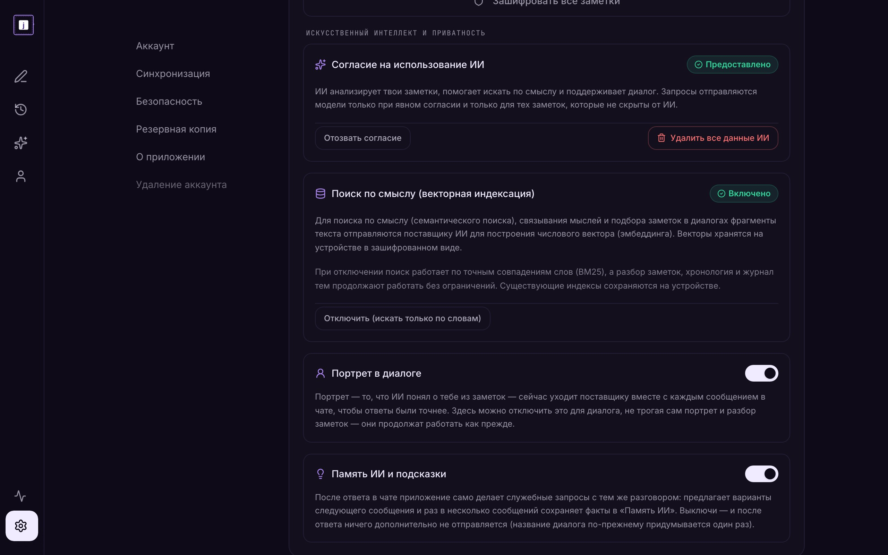
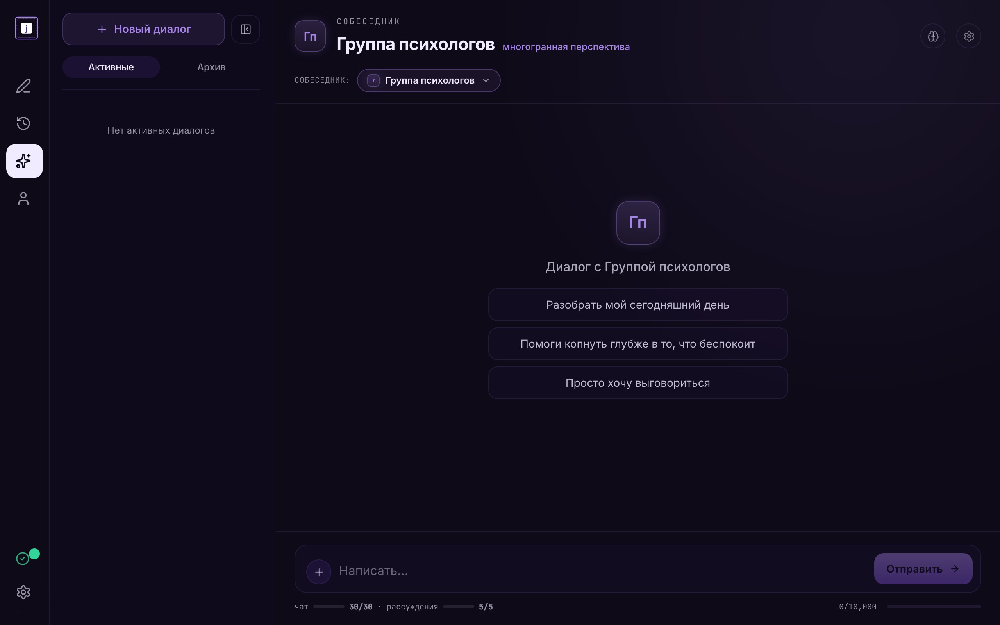
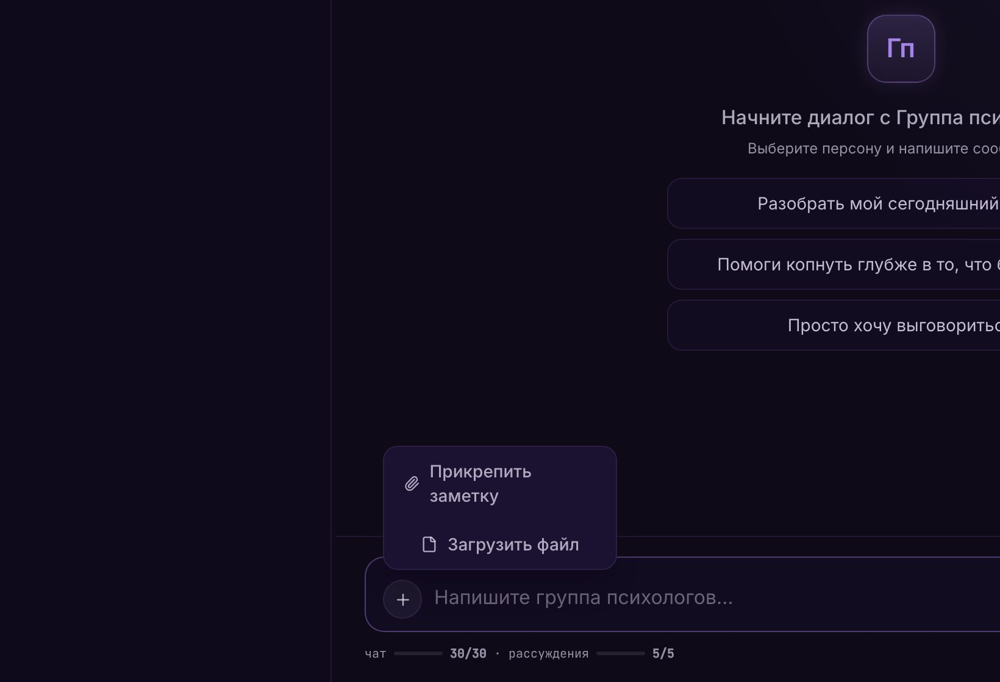
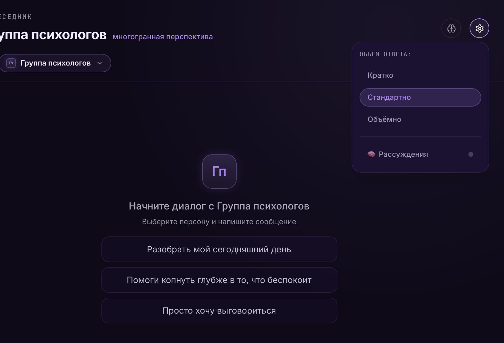
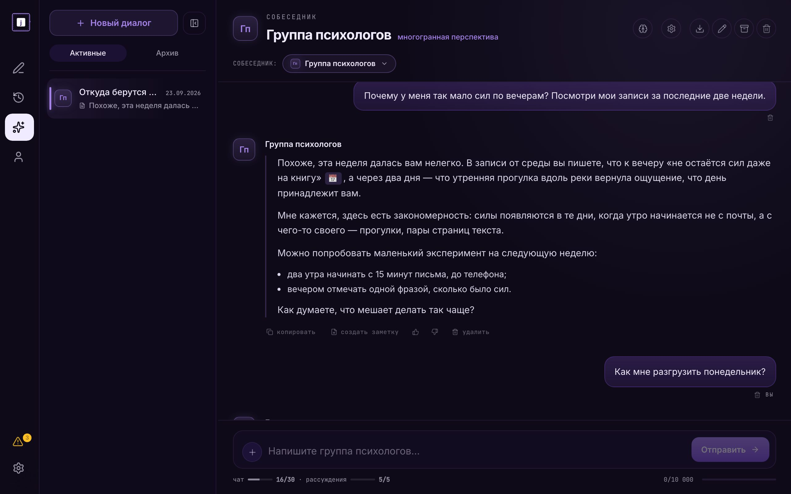
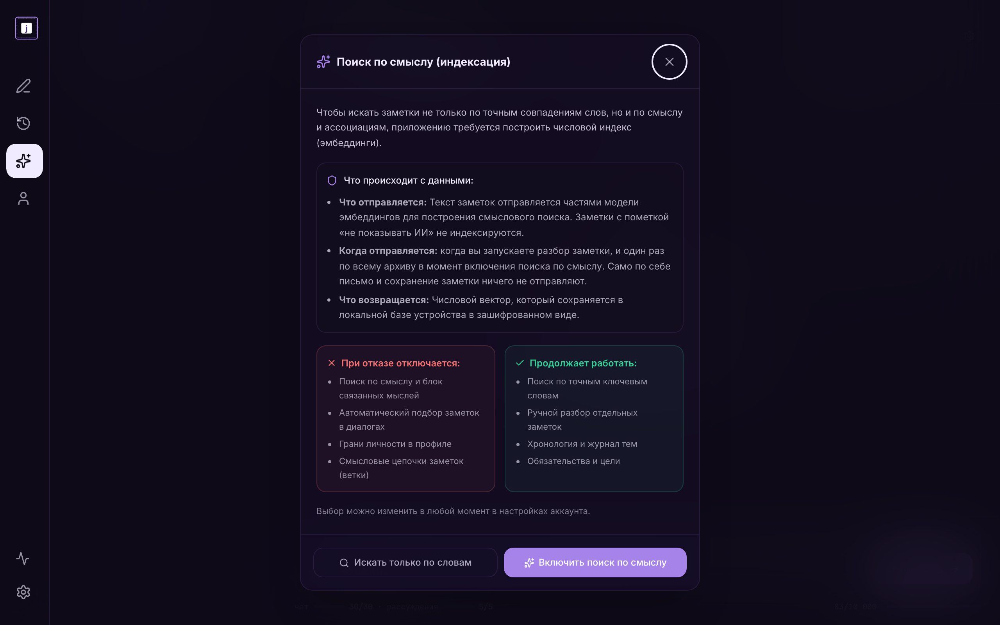
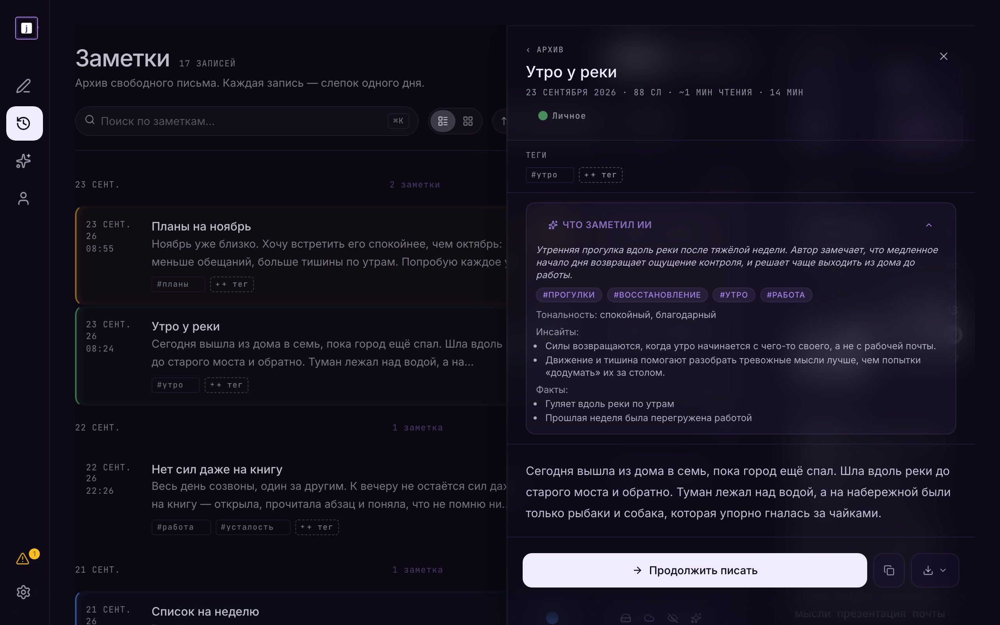
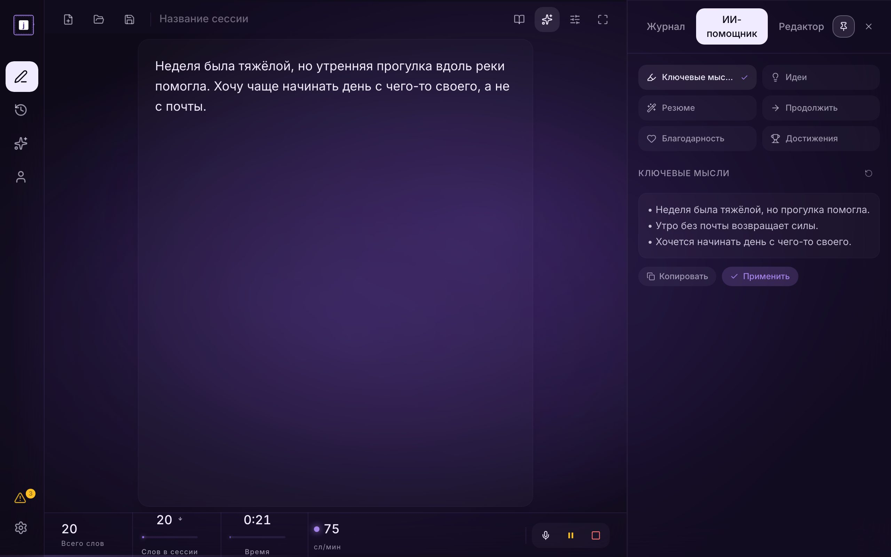
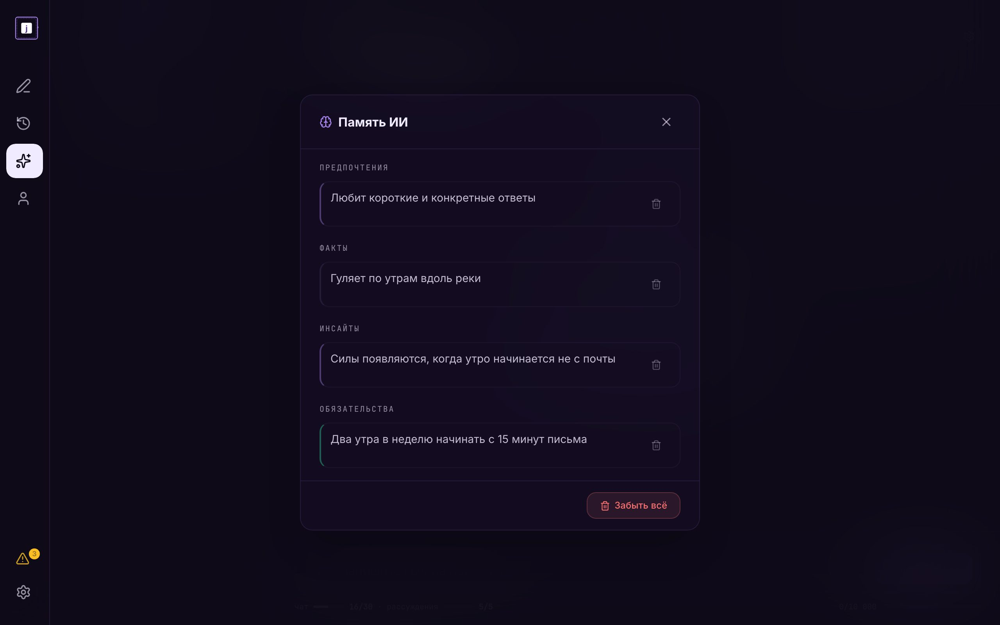

ИИ-собеседник и разбор
В justwriting есть ИИ, с которым можно поговорить о своих записях, попросить разобрать заметку или помочь с текстом прямо в редакторе. Здесь — как всем этим пользоваться, сколько запросов доступно в день и какой текст при этом куда уходит.
Что умеет ИИ
- Чат-собеседник. С ИИ можно поговорить о том, что вас занимает. Он сам подбирает подходящие записи из ваших заметок и опирается на них в ответе.
- Разбор заметки. ИИ читает одну заметку и коротко пишет, что в ней заметил: пересказ, темы, тон, наблюдения.
- Помощник в редакторе. Пока вы пишете, он может выделить ключевые мысли, подсказать идеи, сделать резюме или продолжить текст.
- Память. Из разговоров ИИ запоминает важное о вас: предпочтения, факты, обязательства. Всё запомненное можно посмотреть и удалить.
Чего ИИ не делает: не читает ваши заметки в фоне и не разбирает их сам. Текст уходит к ИИ, только когда вы что-то для этого делаете: пишете в чат, нажимаете разбор или кнопку помощника. Пока вы просто пишете и сохраняете заметки, ИИ их не получает.
Согласие на ИИ
ИИ работает только для тех, у кого есть аккаунт. Без входа раздел AI закрыт: вместо него вы увидите Требуется регистрация. Аккаунт создаётся по приглашению — об этом в разделе Начало работы.
При первом входе открывается окно Политика конфиденциальности. Одна галочка в нём обязательна — без неё приложением не пользоваться. Ниже есть отдельный блок Функции искусственного интеллекта с пометкой Необязательно. Если отметить его, вы даёте согласие на обработку ваших записей для работы ИИ. Если нет — писать и хранить заметки можно как обычно, но ИИ будет выключен.
Как дать или отозвать согласие позже
- Откройте Настройки → Безопасность.
- Найдите раздел Искусственный интеллект и приватность.
- В карточке Согласие на использование ИИ видно текущее состояние: Предоставлено или Не предоставлено. Нажмите Предоставить согласие или Отозвать согласие.
После отзыва ИИ перестаёт отвечать и разбирать заметки. То, что он уже успел посчитать (разборы, история диалогов), остаётся, пока вы сами не нажмёте Удалить все данные ИИ — подробнее в разделе о приватности.

Чат с ИИ
Чат открывается пунктом AI в меню слева. Слева в чате — список диалогов, в центре — сам разговор, внизу — поле ввода.

Диалоги
- Новый диалог — начать разговор с чистого листа. Название диалогу ИИ придумает сам после первого ответа.
- Вкладки Активные и Архив — текущие и отложенные разговоры. Диалог из архива возвращается кнопкой Восстановить.
- Над открытым диалогом есть кнопки: Скачать как текст, Переименовать, В архив и Удалить.
Собеседники
В шапке чата, рядом с надписью Собеседник:, выбирается, в какой роли будет отвечать ИИ. Есть три встроенных собеседника:
- Группа психологов — смотрит на ваш текст глазами нескольких психологических школ.
- КПТ-психолог — помогает заметить автоматические мысли и искажения в рассуждениях.
- Коуч — помогает найти цель и сформулировать следующий шаг.
Кнопка Описание и промпт показывает, как устроен собеседник. Встроенных собеседников менять нельзя, но можно сделать своего.
- Нажмите Создать — откроется окно Создать персону.
- Выберите Эмодзи и впишите Имя (до 30 символов).
- В поле System prompt опишите, кем должен быть собеседник и как ему с вами говорить. Нужно от 10 до 500 символов.
- Нажмите Создать. Перед созданием инструкцию проверяет сервер, и эта проверка тратит 1 запрос из дневного лимита чата.
Своего собеседника потом можно изменить или удалить. Если сменить собеседника посреди разговора, в диалоге появится отметка о смене.
Поле ввода
- В одно сообщение помещается до 10 000 символов — счётчик виден под полем справа.
- Enter отправляет сообщение, Shift+Enter переносит строку.
- Кнопка + слева от поля открывает меню: Прикрепить заметку — выбрать одну или несколько своих заметок; их текст поедет в диалог целиком. (Пункт «Загрузить файл» убран: вставьте текст прямо в поле или прикрепите заметку.)
- Если вставить в поле длинный текст, появится кнопка «Это заметка? Разобрать как заметку (точнее по тексту)».
- Пока ИИ отвечает, вместо Отправить стоит кнопка Обработка… с квадратиком. Нажмите её, чтобы остановить ответ, — то, что уже пришло, останется в диалоге.

Настройки ответа
Кнопка с шестерёнкой в шапке чата открывает два параметра:
- Объём ответа: — Кратко, Стандартно (так по умолчанию) или Объёмно.
- 🧠 Рассуждения — ИИ сначала думает, потом отвечает. Ответ приходит дольше, зато бывает глубже. Ход рассуждений можно раскрыть в блоке 🧠 Ход мысли над ответом. Когда вы включаете этот режим, приложение просит подтвердить.

Что можно сделать с ответом
Под каждым ответом ИИ есть кнопки:
- копировать — скопировать текст ответа;
- создать заметку — сохранить ответ как новую заметку с тегом «ИИ»;
- иначе (только под последним ответом) — попросить ответить по-другому. Прежние варианты не пропадают, между ними можно листать стрелками (например, «2/3»). Каждый новый вариант — это новый запрос, он считается в дневной лимит;
- 👍 — ответ понравился. ИИ запомнит, что такой тон вам подходит;
- 👎 — ответ не тот. Приложение спросит Что не так с ответом? — можно написать, например, «короче» или «теплее», и ИИ учтёт это дальше;
- удалить — убрать ответ из диалога.

Ссылки, подсказки и поиск
- Ссылки на заметки. Если ИИ опирается на вашу запись, в ответе появляется метка со значком 📅. Если заметка нашлась в браузере на этом устройстве, рядом со значком видна её дата, например «📅 12 мар.»; иногда метка показывается одним значком, без даты. Нажмите на метку — откроется эта заметка, если она есть на этом устройстве.
- «Поискать в заметках». Иногда ИИ сам предлагает кнопку 🔍 Поискать в заметках: „…“. Нажмите её, если хотите, чтобы он поискал в ваших записях по этим словам.
- Подсказки следующего хода. После ответа появляются три коротких варианта, как продолжить разговор. Нажмите любой — он отправится как ваше сообщение. Сами подсказки ваши запросы не тратят. Их можно выключить переключателем «Память ИИ и подсказки».
- Если вам очень тяжело. Если в сообщении слышно, что вам сейчас очень плохо, над полем ввода появится плашка с телефонами доверия, где ответит живой человек. Её можно закрыть крестиком. ИИ-собеседник не заменяет специалиста.
Как ИИ находит ваши записи
Когда вы пишете в чат, приложение само ищет подходящие заметки и передаёт ИИ их фрагменты вместе с вашим сообщением. Искать можно двумя способами:
- По словам — работает всегда. Находит заметки, где встречаются те же слова, что в вашем сообщении.
- По смыслу — работает, только если вы его включили. Находит записи о том же, даже если слова другие: на вопрос про «усталость» найдётся и заметка, где вы писали «сил нет».
Когда вы впервые напишете в чат что-то похожее на поиск по заметкам, откроется окно Поиск по смыслу (индексация). В нём объяснено:
- что отправляется: текст заметок, частями, — на сервер, который строит поисковый индекс;
- когда: один раз по всем заметкам в момент включения и потом при разборе каждой заметки. Само письмо и сохранение заметок ничего не отправляют;
- что перестанет работать без поиска по смыслу и что останется.
Нажмите Включить поиск по смыслу или Искать только по словам. Выбор можно поменять позже: Настройки → Безопасность → Искусственный интеллект и приватность, карточка поиска по смыслу, кнопки Включить поиск по смыслу или Отключить (искать только по словам). После отключения новые заметки перестают отправляться, а уже построенный индекс остаётся, пока вы не нажмёте Удалить все данные ИИ.

Разбор заметки
Разбор — это короткий взгляд ИИ на одну заметку. Он запускается только по вашей кнопке — сам по себе ИИ заметки не разбирает.
Как запустить
- На странице Заметки — значок ✨ в строке заметки (подсказка Разобрать заметку через ИИ).
- В предпросмотре заметки — кнопка Проанализировать.
Когда разбор готов, появится сообщение Заметка разобрана. Если вы запускали разбор из предпросмотра и видите подсказку «Обновите страницу, чтобы увидеть разбор» — обновите страницу, и результат появится. Как устроены список заметок и предпросмотр, рассказано в разделе Заметки.
Что покажет разбор
В предпросмотре заметки появляется блок Что заметил ИИ — нажмите на заголовок, чтобы его раскрыть. Внутри:
- короткий пересказ заметки;
- темы — до пяти меток вида «#работа»;
- Тональность: — общий тон записи;
- Инсайты: — что ИИ заметил между строк;
- Факты: — конкретные события и обстоятельства из текста.

Ограничения
- Заметку короче 50 символов разобрать нельзя — приложение скажет Заметка слишком короткая для разбора.
- У очень длинной заметки ИИ читает первые 50 000 символов.
- Нужен интернет.
- Разбор тратит фоновый лимит, а не запросы чата (см. лимиты).
Как удалить разбор
Нажмите ✨ в строке уже разобранной заметки (подсказка Удалить разбор ИИ) и подтвердите. Разбор удалится и на этом устройстве, и в облаке. Сама заметка останется.
Из разборов собирается «История моей жизни» в Профиле — пересказы и факты из заметок по дням.
«Не показывать ИИ»
Если какую-то заметку ИИ видеть не должен, её можно скрыть.
- На странице Заметки нажмите значок перечёркнутого глаза в строке заметки (подсказка Не показывать ИИ).
- Подтвердите в окне Скрыть эту заметку от ИИ?.
После этого заметка не используется в разговорах с ИИ и в разборе, а её разбор, если он был, удаляется. Значок глаза становится красным, кнопка разбора ✨ у этой заметки перестаёт работать. Чтобы вернуть заметку, нажмите тот же значок — подсказка на нём будет Разрешить доступ ИИ.
Заметки в корзине так же, как скрытые, не используются в разговорах с ИИ и в разборе.
ИИ-помощник в редакторе
Помощник работает с текстом, который вы пишете прямо сейчас. Чтобы его открыть, нажмите ✨ ИИ-помощник в шапке экрана письма — справа откроется одноимённая панель. В ней шесть действий:
- Ключевые мысли — главное из написанного;
- Идеи — о чём можно подумать или написать дальше;
- Резюме — короткий пересказ;
- Продолжить — продолжение вашего текста;
- Благодарность — за что в этом дне можно сказать спасибо;
- Достижения — что у вас получилось.
Под результатом есть две кнопки. Копировать копирует текст. Применить дописывает его в конец заметки с подписью, например «Резюме от ИИ:», — ваш текст при этом не меняется. Если заметка пустая, помощник попросит сначала что-нибудь написать.
Помощник тратит те же запросы, что и чат.

«Обсудить с ИИ» после сессии
Когда вы завершаете сессию письма, в окне завершения есть кнопка Обсудить с ИИ. Она открывает чат, к которому уже прикреплена эта заметка. Подробнее о завершении сессии — в разделе Как писать.
Память ИИ
Чтобы не спрашивать каждый раз одно и то же, ИИ запоминает кое-что из ваших разговоров. Примерно раз в три обмена сообщениями он сам отбирает, что стоит запомнить. Ещё запись в память добавляют ваши 👍 и 👎 под ответами.
Подсказки следующего хода и сбор фактов в память — это служебные запросы к ИИ с тем же разговором, которые приложение делает само после ответа. Их выключает переключатель Память ИИ и подсказки в Настройки → Безопасность → Искусственный интеллект и приватность. После этого вместе с ответом ничего дополнительно не отправляется; только название нового диалога ИИ по-прежнему придумывает один раз. Выбор хранится на этом устройстве.
Посмотреть запомненное можно в окне Память ИИ — кнопка 🧠 в шапке чата. Записи разложены по группам: Предпочтения, Факты, Инсайты, Обязательства. Если окно пустое, там будет написано ИИ пока ничего не запомнил.
- Чтобы удалить одну запись, нажмите значок корзины рядом с ней (подсказка Удалить воспоминание).
- Чтобы стереть всё сразу, нажмите Забыть всё и подтвердите.

Сколько запросов в день
| Что | Сколько |
|---|---|
| Чат, ИИ-помощник в редакторе и проверка своего собеседника — общий счётчик | 30 запросов в сутки |
| Режим «🧠 Рассуждения» — отдельный счётчик | 5 запросов в сутки |
| Пауза между сообщениями в чате | 10 секунд |
| Фоновые операции: разбор заметок, поиск по смыслу | отдельный дневной лимит |
Все счётчики обнуляются в полночь по UTC — это 03:00 по Москве.
Сколько осталось, видно прямо под полем ввода в чате: чат и рассуждения, например «28/30» и «5/5». Когда какой-то счётчик дошёл до нуля, рядом появляется «сброс через N ч», а в поле ввода — объяснение, например «Дневной лимит сообщений исчерпан. Он обновится в полночь UTC.» Если вы отправляете сообщения слишком часто, приложение попросит подождать несколько секунд.
Если кончился фоновый лимит, разбор заметок и поиск по смыслу снова станут доступны на следующий день, а чат продолжит работать.
Приватность: что и куда уходит
Кто получает текст
Ответы пишет языковая модель, к которой приложение обращается через российский сервис RouterAI. Как написано в окне согласия при входе, RouterAI не хранит содержимое запросов, но по умолчанию может передать запрос зарубежной модели, которая таких гарантий не даёт.
Что именно уходит
- В чате: ваши сообщения в этом диалоге, прикреплённые заметки и файлы, фрагменты найденных заметок, запомненное в памяти ИИ, сегодняшняя дата. Если включён переключатель Портрет в диалоге и у вас есть портрет, уходит и он.
- После ответа в чате: тот же разговор ещё раз — чтобы придумать название диалога (один раз), предложить подсказки следующего хода и раз в несколько сообщений сохранить факты в память. Подсказки и память выключаются переключателем Память ИИ и подсказки.
- При разборе: текст заметки (до 50 000 символов).
- В ИИ-помощнике: текст заметки, которую вы сейчас пишете.
- Для поиска по смыслу: текст заметок частями — если вы его включили (см. выше).
Если в заметке упомянуты другие люди, то, что вы о них написали, уходит вместе с текстом.
А как же шифрование?
Шифрование защищает копию ваших заметок в облаке: без вашего пароля её не прочитать. Но чтобы ИИ мог ответить, ему нужен понятный текст. Поэтому для запроса к ИИ заметка расшифровывается на вашем устройстве и отправляется в открытом виде. От сервиса ИИ шифрование не защищает. Подробнее о шифровании — в разделе Пароли и шифрование.
Как ограничить то, что видит ИИ
- Не давать согласие на ИИ или отозвать его в настройках (см. выше). Тогда ни один текст к ИИ не уйдёт.
- Скрыть отдельные заметки кнопкой «Не показывать ИИ».
- Искать только по словам — не включать поиск по смыслу.
- Выключить переключатель Портрет в диалоге в разделе Искусственный интеллект и приватность. Этот выбор хранится только на этом устройстве.
- Выключить переключатель Память ИИ и подсказки там же — тогда после ответа в чате служебные запросы не отправляются. Этот выбор тоже хранится только на этом устройстве.
- Удалить всё, что посчитал ИИ, кнопкой Удалить все данные ИИ там же. Удаляются разборы, темы, история диалогов и индекс поиска по смыслу — на устройстве и на сервере. Сами заметки остаются.